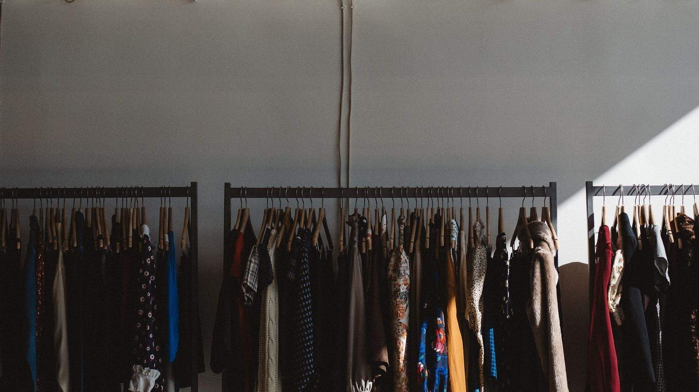
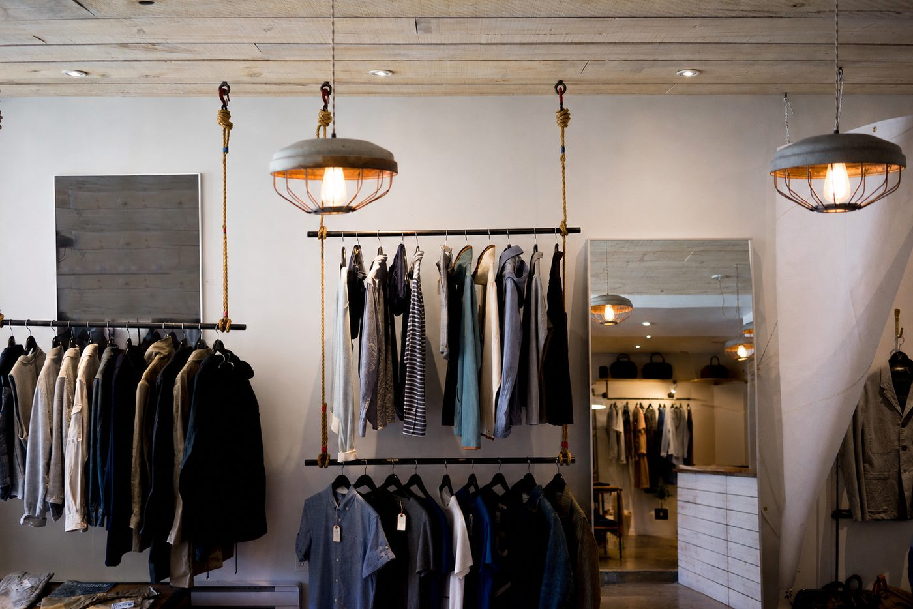

We kept seeing good clothing go into charity bins.
When people clear out their wardrobes, the easiest option is often to put everything into a charity bin and move on. But once clothing goes into a bin, the person donating it has no say in what happens next.
Some clothing is resold, some is downcycled into rags, and some doesn't make it through the sorting process. We thought there should be another option for people with quality clothing they no longer want.
A simple way to turn a wardrobe clear-out into cash.
Bring us your clothing and we'll assess it based on its condition, brand, style and resale potential. If it's something we can sell, we'll pay you for it.
The best pieces we collect find their second life through The Arkives, our online resale store. Clothing we can't resell can instead be donated through our charity network, giving it another opportunity to be useful rather than simply going to waste.

